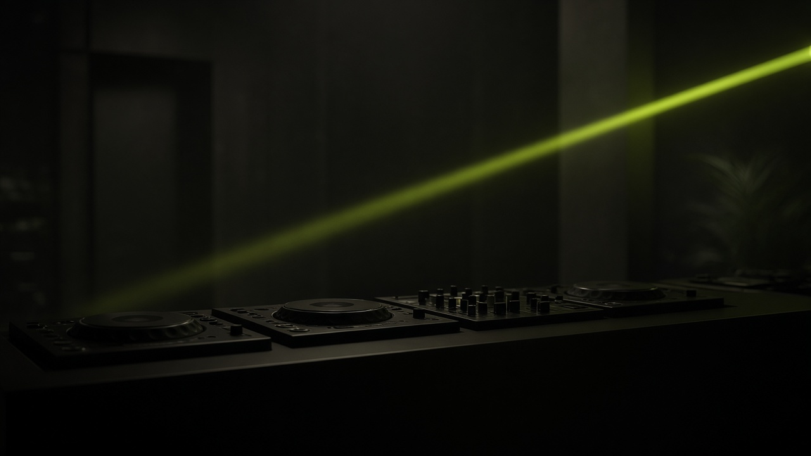
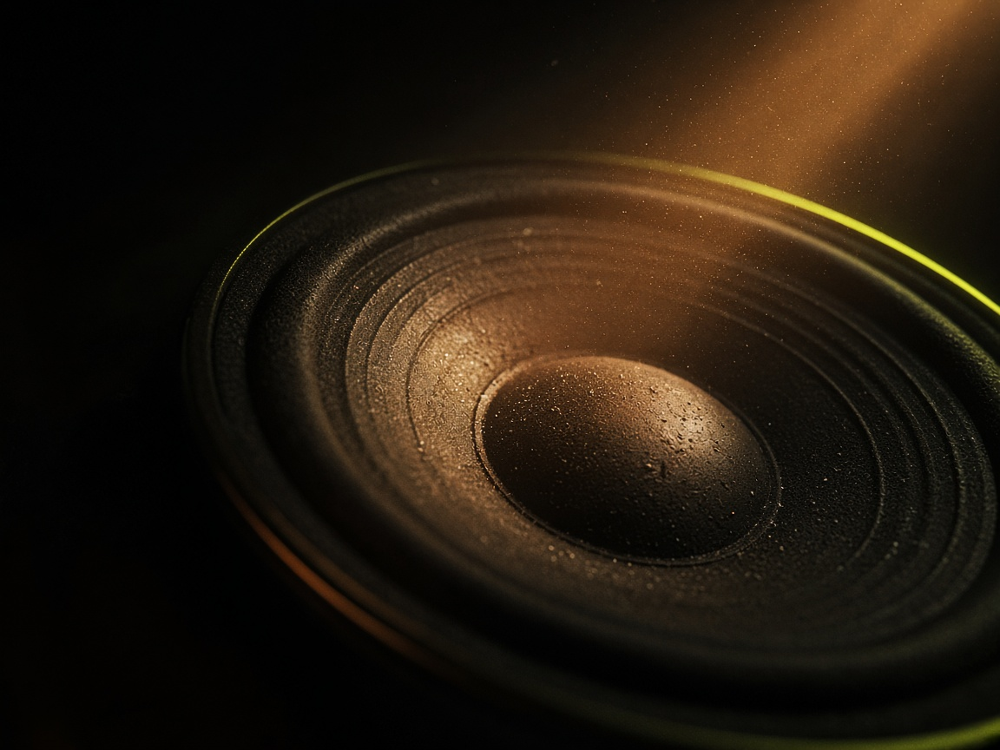

Antes do sync, você reconhece kick, baixo, hat, clap e o vazio da quebra. O número do BPM confirma. Não substitui.
Academia de música eletrônica
Do primeiro kick ao domínio da pista.
VibeDJ é uma cabine de estudo. Você aprende a escutar a frase, a mover o grave na hora certa e a desenhar a energia de um set — do quarto até a noite em que a pista fica com você.

O que esta academia treina
Três coisas que separam um set de uma playlist.
A música eletrônica de pista anda em blocos de 8 e 16 compassos. Entrar no meio da frase é o erro que a pista sente sem saber nomear.
Cada transição faz uma coisa: manter, subir, respirar ou cortar. Se você não escolhe, o crossfader escolhe por você.
Método PISTA
Um jeito de estudar que cabe numa noite.
- P Percepção. O que está tocando de fato.
- I Intenção. O que a próxima faixa deve fazer.
- S Sincronia. Tempo, fase e frase.
- T Técnica. Cue, pitch, EQ, fader.
- A Adaptação. O que a pista devolve.

Simulador
Dois players e um mixer, com nome próprio.
Agulha V1 e Cabine M2 seguem a lógica da cabine profissional: jog, cue, pitch, hot cues, loop, EQ de três bandas, faders e pré-escuta. O som é sintetizado aqui. Nenhuma faixa de terceiro entra no estudo.
Entrar na cabine